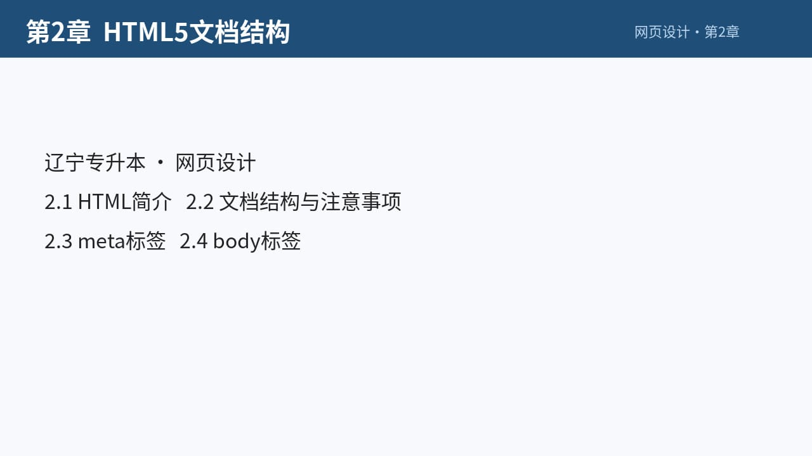

2.2 HTML5 编写注意事项（必记）
1. 标记可以嵌套使用，但不能交叉嵌套
2.2 HTML5 编写注意事项
1. 标记可以嵌套使用，但不能交叉嵌套
正确示例：
<div>
<p>这是一段嵌套的文本/p>
</div>错误示例：
<div>
<p>交叉嵌套的文本</div>
</p>整理
- 标记可以嵌套，但不能交叉嵌套
正确：<div><p>这是一段嵌套的文本</p></div>
错误：<div><p>交叉嵌套的文本</div></p>
讲解
- 直观意思： 标签嵌套就像俄罗斯套娃，大盒子 <div> 里面可以完整地装一个小盒子 <p>，但不能把小盒子的一半露在大盒子外面——谁后打开的，必须先关上；谁先打开的，必须最后关上。
- 为什么： 浏览器解析 HTML 时会在内存里构造一棵树形结构（DOM 树），树中每个子节点只能严格隶属于一个父节点。一旦出现交叉嵌套（<div><p>...</div></p>），节点边界互相打架，就无法形成合法的树结构，浏览器只能强行纠错，容易导致样式错乱。
2. 不区分大小写，建议用小写
2. 不区分大小写，建议用小写
整理
- 不区分大小写，建议用小写
讲解
- 直观意思： 写 HTML 代码要遵守四条好习惯与铁律：标签名写大写小写浏览器都认，但统一写小写最规范；属性值统一套双引号；嵌套一层就往里空一格（缩进），层次一目了然；所有语法符号（<、>、=、"、/、;）必须切到英文半角输入法，绝不能用中文全角标点。
- 为什么：
- 为什么建议小写：可读性强，且与更严格的 XML/XHTML 习惯及现代前端工程规范保持一致。HTML 本身不区分大小写。
- 为什么属性值建议双引号：一旦属性值里包含空格（例如 alt="a nice photo"），如果不加引号，浏览器会把空格后面的词误认成另一个属性名。
- 为什么标点必须英文半角：在计算机编码中，中文引号 “ 和英文引号 " 是完全不同的字符编码。浏览器解析器只认 ASCII 英文半角符号作为语法分隔符，遇到中文标点会当成普通文字，导致整个标签失效。
3. 标记中可以放各种属性，属性值建议用双引号包裹
3. 标记中可以放各种属性，属性值建议用双引号包裹
整理
- 标记中可以放各种属性，属性值建议用双引号包裹
4. 缩进书写，便于阅读
4. 缩进书写，便于阅读
整理
- 缩进书写，便于阅读
5. 标点符号全部使用英文输入法输入
5. 标点符号全部使用英文输入法输入
整理
- 标点符号全部使用英文输入法输入（★常考）
6. 允许部分属性值省略
6. 允许部分属性值省略
如布尔属性 checked，可以简写为<input type="checkbox" checked>，无需写 checked="checked"。
整理
- 允许部分属性值省略（布尔属性）：如
<input type="checkbox" checked>，不必写成checked="checked"
讲解
- 直观意思：
- 布尔属性：就像电灯开关，只有“开/关”两种状态。写了 checked 就代表复选框默认打勾，不用啰嗦地写成 checked="checked"。
- 注释：写在 <!-- 和 --> 中间的字是留给程序员自己看的备忘录，浏览器渲染网页时会直接跳过，用户页面上看不到。
- 为什么：
- 布尔属性在 HTML5 中以“属性是否存在”代表真假（存在即为真，不写即为假），省略属性值既减少冗余代码又不容易拼错。
- 注释能解释某块代码的用途，或在调试时临时“屏蔽”某段代码而不用删掉它，提高维护效率。
自测要点解答
- 认清什么是布尔属性：只有“是/否”两种状态的开关型属性，典型例子就是复选框默认选中属性 checked。
- 对照完整写法与 HTML5 简写：
- 传统完整写法：<input type="checkbox" checked="checked">
- HTML5 简写：<input type="checkbox" checked>
- 判断对错的规则：题目如果问“HTML5 中所有属性都必须写成 属性="属性值" 的形式，不能省略属性值”，该说法错误——因为允许部分属性值省略（布尔属性）。
自测要点
- 8布尔属性可省略值（如 checked）
7. <!--注释内容-->表示注释语句
7. <!--注释内容-->表示注释语句，注释不会在浏览器中显示，用于代码说明。
整理
- 注释：
<!--注释内容-->，注释不会在浏览器中显示，用于代码说明。
讲解
自测要点解答
- 检查嵌套合法性：
- 遵循先开的后关，后开的先关原则。
- <div><p>文字</p></div>：先开 div，后开 p，先关 p，再关 div → 正确。
- <div><p>文字</div></p>：p 还没关就关了 div → 交叉嵌套，错误。
- 检查大小写与引号缩进：
- HTML 不区分大小写，但建议统一用小写。
- 属性值建议用双引号包裹，代码建议缩进书写。
- 检查标点符号：
- 代码里所有尖括号 < >、等号 =、双引号 "、斜杠 / 必须全部使用英文输入法（半角）输入，中文标点会导致报错或失效。
- 检查注释语法：
- 固定写法：<!--注释内容-->（开头 <!-- 是小于号 + 感叹号 + 两个短横线；结尾 --> 是两个短横线 + 大于号）。
- 效果：不会在浏览器页面中显示，仅用于代码说明。
自测要点
- 5不能交叉嵌套；建议小写；英文标点；注释写法
延伸
讲解
实操题解答
- 审嵌套关系：外层 <div>...</div> 包裹内层 <p>...</p>，没有交叉嵌套，结构意图正确。
- 审标签完整性：原文此处漏写了一个左尖括号 <，写成了 /p>，浏览器会把 /p> 当成普通正文文字直接显示在网页里，而不会结束段落。
- 修正结果：
<div>
<p>这是一段嵌套的文本</p>
</div>嵌套规则（常考）
- 可以嵌套：外层包内层，像盒子套盒子。
- 不能交叉嵌套：先开的后关。
正确：<div><p>文字</p></div>
错误：<div><p>文字</div></p>思维导图
- 2.2 HTML5 编写注意事项
- 标记可以嵌套使用，但不能交叉嵌套
- 不区分大小写，建议用小写
- 属性值建议用双引号包裹
- 缩进书写，便于阅读
- 标点符号全部使用英文输入法输入
- 允许部分属性值省略
- 如布尔属性 checked
<!--注释内容-->表示注释语句
视频

第2章 HTML5 文档结构6:51